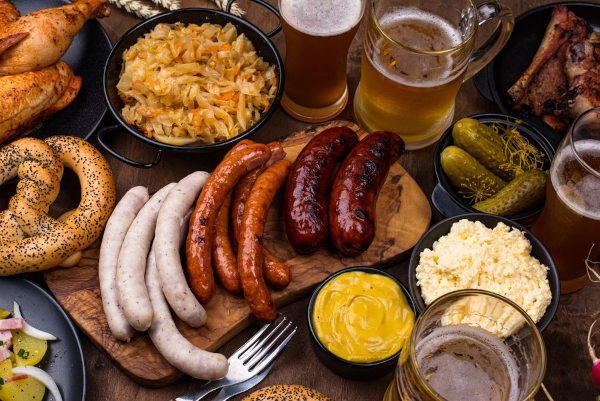

Sobre
História
A história de Santa Catarina remonta a tempos pré-coloniais, quando povos indígenas habitavam a região. No entanto, sua história moderna começou com a colonização europeia. Colonizada por portugueses, a região recebeu imigrantes alemães e italianos, que influenciaram profundamente a cultura catarinense. Cidades como Pomerode e Brusque mantêm viva a herança alemã, com arquitetura, gastronomia e festas típicas.
Um exemplo notável dessa influência é a Oktoberfest de Blumenau, que atrai visitantes de todo o país com sua atmosfera alegre, cervejas artesanais e trajes tradicionais. A cultura italiana também está enraizada em Santa Catarina, especialmente em cidades como Nova Veneza, onde festas típicas e culinária autêntica celebram as raízes italianas.

Geografia
Santa Catarina é uma terra de contrastes geográficos impressionantes. Ao longo de sua costa, praias paradisíacas como a Praia do Campeche e a Praia do Rosa se estendem por quilômetros, oferecendo oportunidades para o relaxamento e esportes aquáticos. No interior, a Serra Catarinense revela um cenário totalmente diferente, com picos nevados no inverno e cânions esculpidos pela ação do tempo.
Um exemplo cativante dessa diversidade é o Parque Nacional de Aparados da Serra, onde o Cânion Itaimbezinho se destaca como um dos maiores cânions da América do Sul. A rica biodiversidade da Mata Atlântica é preservada em parques e reservas, como o Parque Estadual do Rio Vermelho, proporcionando um refúgio para inúmeras espécies de plantas e animais ameaçados.
Economia
A economia de Santa Catarina é uma sinfonia de setores variados. A agropecuária tem um papel de destaque, com o estado liderando a produção nacional de carne suína e de frango. A cidade de Chapecó é conhecida como a "Capital Mundial da Carne", abrigando grandes empresas do setor. Além disso, a cidade de Joinville é um polo industrial, abrigando empresas de diversos segmentos, como automotivo, metalurgia e tecnologia.
O setor tecnológico é um exemplo notável de diversificação econômica. O bairro Saco Grande, em Florianópolis, concentra empresas de tecnologia e startups, promovendo inovação e desenvolvimento. A Havan, uma das maiores redes de lojas de departamentos do Brasil, também tem sede em Santa Catarina.
Turismo
O turismo é uma força vital em Santa Catarina, atraindo visitantes com uma variedade impressionante de experiências. Florianópolis, a capital, é famosa por suas praias de areia branca e águas cristalinas. A praia de Jurerê Internacional é um destaque, conhecida por suas festas de verão e mansões luxuosas.
Na cidade de Bombinhas, o turismo ecológico se destaca, com praias tranquilas e trilhas pela Mata Atlântica. O Balneário de Camboriú, por sua vez, é famoso pelo teleférico e pela vida noturna agitada. A cidade histórica de Laguna oferece um vislumbre do passado colonial do Brasil, com ruas de paralelepípedos e casarões coloridos.
Apesar das conquistas notáveis, Santa Catarina enfrenta desafios. O crescimento urbano acelerado e o desenvolvimento industrial podem colocar em risco a biodiversidade e os ecossistemas do estado. A pressão sobre os recursos naturais, como a água, também é uma preocupação crescente. No entanto, esses desafios abrem portas para oportunidades. A busca por alternativas sustentáveis, como o turismo ecológico e a agricultura consciente, pode contribuir para um futuro mais equilibrado.